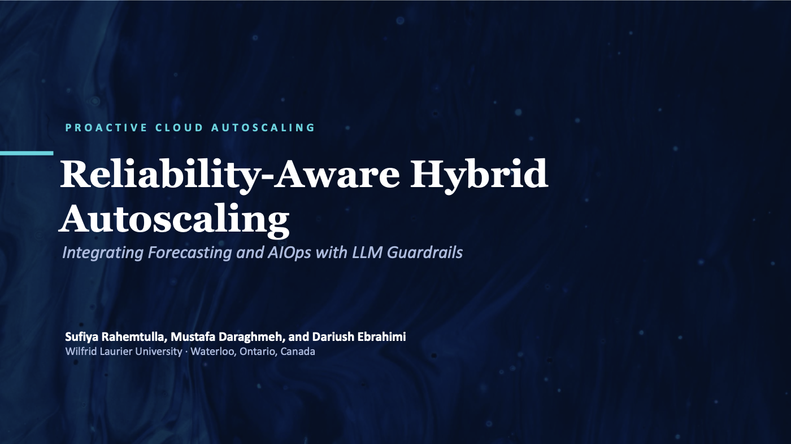

Open PDF ↗Senior Directed Research Study · Wilfrid Laurier University · 2026
Predictive vs. Reactive Autoscaling in Cloud Environments: A Hybrid AIOps Approach
As a senior-level directed research study under the supervision of my professor, I investigated whether combining predictive forecasting with a Large Language Model could close the “reaction gap” that causes standard cloud autoscalers to fail during sudden traffic spikes. Using Google’s Cluster-Usage Traces, I characterized real-world workload behaviour, benchmarked forecasting models, and designed a hybrid system that reduced SLA violations by 85.2% and resource waste by 45.8% against industry baselines. I also ran an ablation study showing that without deterministic guardrails, the LLM made unsafe scaling decisions that raised resource waste to 48.7%. This project strengthened my ability to frame a research problem, design rigorous experiments, and evaluate results critically, and showed me that AI systems need strict validation to be trusted in real operations.